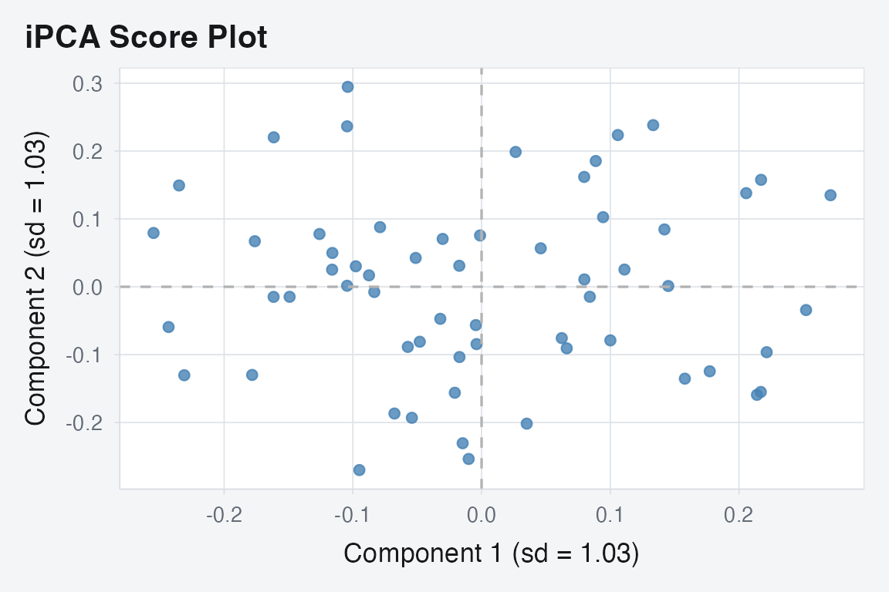
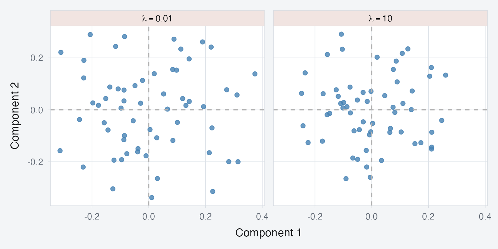
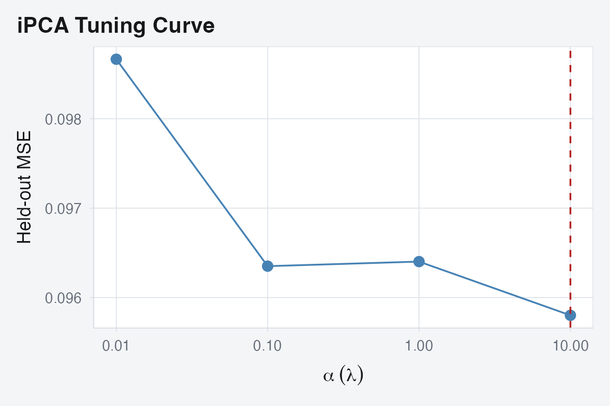

Why iPCA?
When you run PCA on concatenated multi-block data, blocks with more variables or higher variance dominate the result. MFA addresses this by normalizing each block’s first singular value to 1. But this is a single global correction — it doesn’t adapt to the actual signal content of each block.
Integrative PCA (iPCA) takes a different approach. It applies
per-block multiplicative penalties that continuously reweight
each block’s contribution based on how well it aligns with the emerging
shared structure. The penalty strength lambda controls how
aggressively blocks are equalized: small lambda approaches
standard PCA, large lambda gives each block equal influence
regardless of size.
iPCA was introduced by Tang and Allen (2021) and implemented here using an efficient Flip-Flop algorithm.
Quick start
sim <- synthetic_multiblock(
S = 4, n = 60,
p = c(20, 30, 15, 25),
r = 3, sigma = 0.3, seed = 42
)
sapply(sim$data_list, dim)
#> [,1] [,2] [,3] [,4]
#> [1,] 60 60 60 60
#> [2,] 20 30 15 25Fit iPCA with a moderate penalty:

iPCA scores. The multiplicative penalty balances block contributions while preserving shared structure.
How iPCA works
iPCA solves a penalized eigenvalue problem. For blocks , it finds shared eigenvectors by maximizing:
where is a concave penalty function (the multiplicative Frobenius penalty). This upweights blocks that align well with the current direction and downweights those that don’t — a soft, adaptive form of integration.
The lambda parameter
lambda controls the integration strength:
-
lambdanear 0: Standard PCA on concatenated data (no reweighting). Blocks with more variables dominate. -
lambda = 1: Moderate integration. Blocks are softly equalized. -
Large
lambda(10+): Strong equalization. Every block contributes roughly equally, regardless of size.
fit_low <- ipca(sim$data_list, ncomp = 3, lambda = 0.01)
fit_high <- ipca(sim$data_list, ncomp = 3, lambda = 10)
Effect of lambda on the score space. Low lambda (left) lets larger blocks dominate; high lambda (right) equalizes contributions.
Tuning lambda with held-out data
ipca_tune_alpha() selects the optimal penalty by holding
out a fraction of the data and measuring reconstruction error:
tune <- ipca_tune_alpha(
sim$data_list, ncomp = 3,
alpha_grid = c(0.01, 0.1, 1, 10),
holdout_frac = 0.1
)
tune$best_alpha
#> [1] 10
Held-out MSE across alpha (lambda) values. Lower is better.
The tuning result includes a refit on the full data at the best alpha:
Partial scores
Each block contributes its own view of the observations through per-block loadings:
# Per-block scores
ps <- fit$partial_scores
sapply(ps, dim)
#> B1 B2 B3 B4
#> [1,] 60 60 60 60
#> [2,] 3 3 3 3Projection
Project new observations onto the fitted model. You pass a list of blocks with the same structure as the training data:
Computation methods
iPCA supports two internal methods:
-
"gram"(default for wide data): Works in sample space (). Efficient when blocks have more variables than observations. -
"dense": Works in variable space. Better for tall data.
The "auto" setting (default) picks the right method
based on data dimensions.
# Force gram mode for high-dimensional blocks
fit_gram <- ipca(sim$data_list, ncomp = 3, lambda = 1, method = "gram")When to use iPCA
iPCA is appropriate when:
- You have multiple data blocks on the same observations
- You want adaptive, data-driven integration (vs. MFA’s fixed normalization)
- Blocks vary substantially in dimensionality or signal strength
- You want a tunable integration strength
iPCA is not appropriate when:
- Blocks have different observations (use
anchored_mfa()) - You need classical MFA block weights for interpretation (use
mfa()) - Your data are covariance matrices (use
covstatis())
Next steps
-
vignette("mfa")— Classical MFA with fixed normalization -
vignette("penalized_mfa")— MFA with loading similarity penalties -
?ipca_tune_alpha— Detailed tuning options